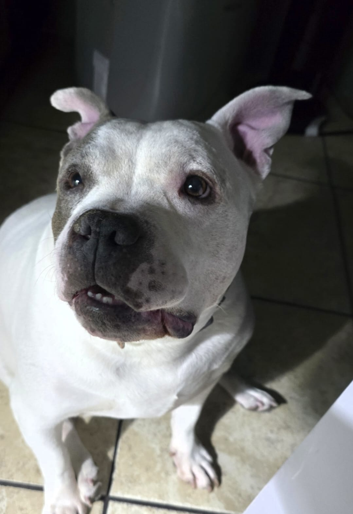

Tensión Creciente
Ignoras las señales de la criatura e insistes en interactuar con ella.
Sus ojos ahora brillan con un rojo intenso. Está realmente enojada.
Las escamas de su lomo se erizan como púas. Esto no pinta bien.
Puedes sentir el calor emanando de su cuerpo. ¿Qué clase de criatura es?